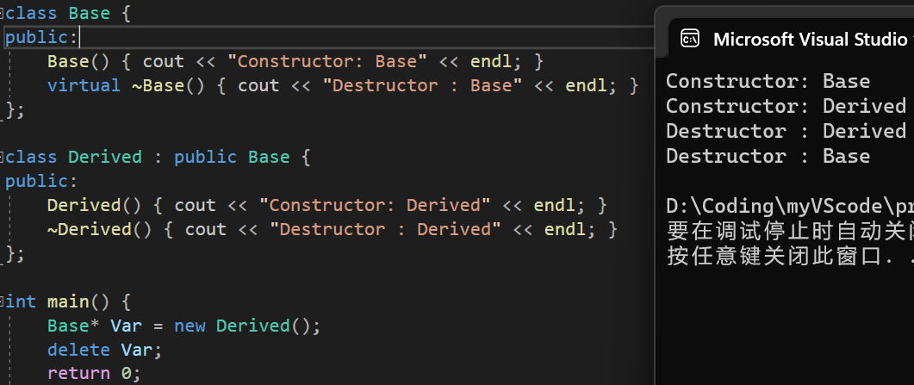
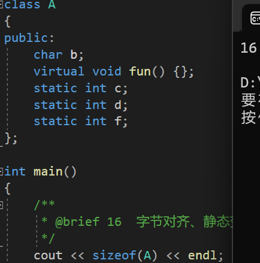
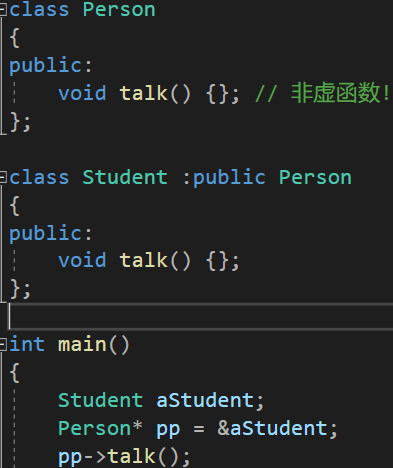
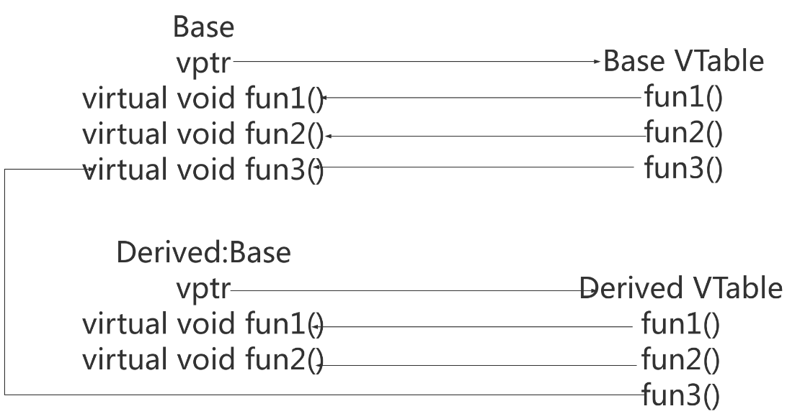

C++多态
1.在成员函数内可以调用纯虚函数，在构造函数/析构函数内部不能使用纯虚函数。
如果一个类从抽象类派生而来，它必须实现了基类中的所有纯虚函数，才能成为非抽象类。
2.基类的析构函数为虚函数时
3.虚函数理解：实现多态性，定义父类指针指向子类对象，调用指针时访问的是子类的重载函数。
4.字节对齐+static不影响类大小+虚指针大小为8

5.对于含有虚函数的类，不管有多少个虚函数，只有一个虚指针
6.Virtual关键字其实质是告知编译系统，被指定为virtual的函数采用动态联编的形式编译。
函数名联编：将源代码中的函数调用解释为执行特定的函数代码块的过程称为函数名联编。
同一个名称的函数有多种，联编就是把调用和具体的实现进行链接映射的操作。
静态联编：编译阶段就已经知道操作与相应操作的执行之间的关系
动态联编：运行阶段才知道具体操作与相应执行代码块之间的关系
例：

此时，编译阶段已确定talk为person类的方法
理论上编译器当然是可判断的，因为编译器本就能看到所有的代码。
***但编译器的本质任务是代码的转换，它不会从主函数的第一行执行到最后一行来看每个指针实际指向对象的类型，因为这不是编译期要做的任务
***即使你自己实现了含有这个功能的编译器，那同样也是编译期不清楚类型。因为这是你的编译器的运行期做的检测，而不是编译期做的检测。编译期当然不清楚
对于动态联编的理解：对于虚函数，编译器只在运行时判断父类指针指向的子类类型，这是一个标准。
7.为什么要有纯虚函数？
**基类实例化对象不合理
派生类需要实现函数
8.首先，每个使用虚函数的类（或者从使用虚函数的类派生）都有自己的虚拟表。该表只是编译器在编译时设置的静态数组。虚拟表包含可由类的对象调用的每个虚函数的一个条目。此表中的每个条目只是一个函数指针，指向该类可访问的派生函数。

9.给每个对象添加一个隐藏成员。隐藏成员中保存了一个指向存放函数地址的数组的指针。这种数组称为虚函数表(virtual function table, vtbl)。虚函数表中存储了为类对象进行声明的虚函数的地址。